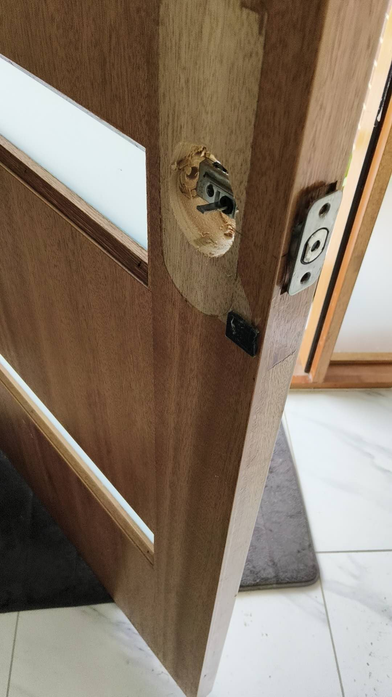
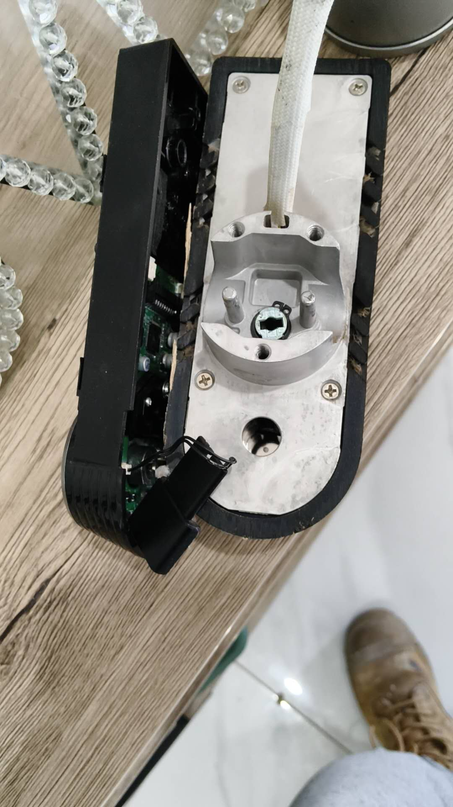
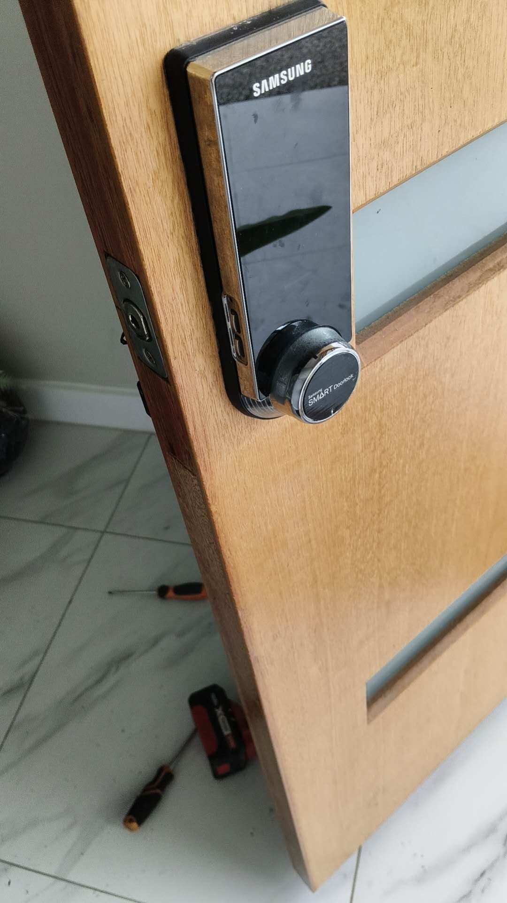
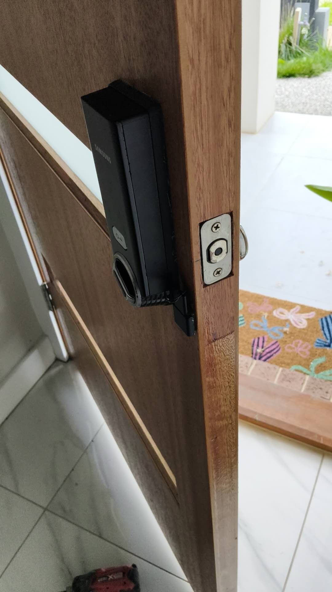

Work example
Door hardware replacement & smart lock fitting
An example showing door hardware removal and smart-lock fitting details.
The work shown
Door hardware replacement and smart-lock fitting
The supplied photos show door-hardware removal and smart-lock fitting details. For your door or lock concern, contact Ellis Perth for an assessment. We check the door, hardware and security or licensed-work requirements, then confirm the work scope, qualified service arrangements and quote.
Example gallery
Door hardware fitting details shown




Start your request
Tell us about the door and lock
Share the door type, lock concern and Perth property location to arrange an assessment and confirm the work scope and quote.